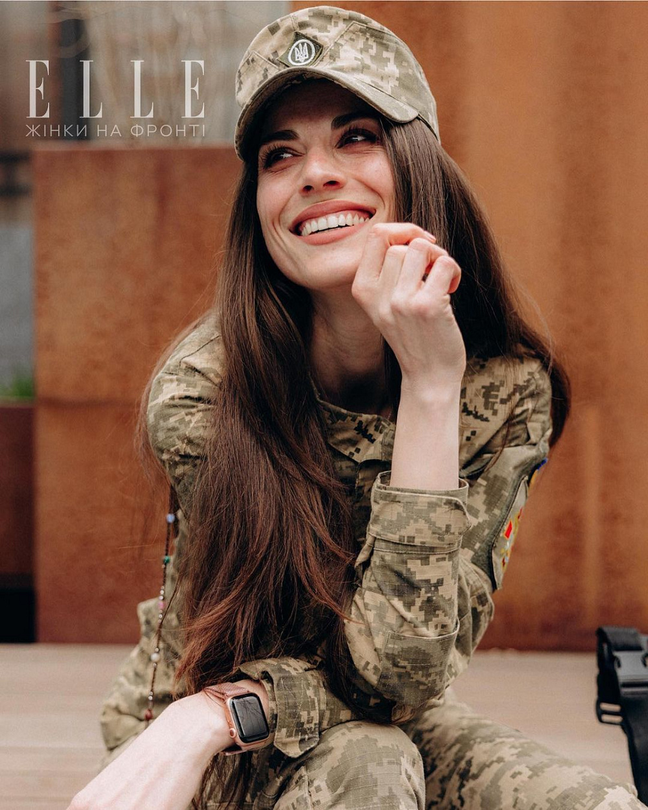

ЯК УКРАЇНСЬКІ ЖІНКИ-ВІЙСЬКОВІ БОРОНЯТЬ НАШУ КРАЇНУ ТА РЯТУЮТЬ ЖИТТЯ НА ПЕРЕДОВІЙ: 10 ВРАЖАЮЧИХ ІСТОРІЙ
Цикл інтерв’ю на ELLE.UA «Жінки на фронті» про жінок-військових вважаю найважливішим за всі роки своєї професійної діяльності. ELLE з французької перекладається як «вона». А «вона» в Україні сьогодні саме така — мужня та смілива, бореться за незалежність своєї країни. Під час війни жінки взяли на себе величезну відповідальність: одні — за родини й дітей, виїхавши за кордон та допомагаючи в тилу, багато інших — на фронті, взявши в руки зброю та поїхавши в найгарячіші точки бойових дій, щоб захищати свої сім’ї та Батьківщину.
«Українські жінки — це не тільки жертви війни. Вони нарівні із чоловіками воюють на всіх фронтах», — сказала перша леді України Олена Зеленська в інтерв’ю ЗМІ Республіки Корея. І це дійсно так, жінки України — мужні, сміливі, незламні, приклад та натхнення для всіх народів світу.
У лавах української армії служать 42 тисячі жінок. Тисяча з них перебуває на командирських посадах, чудово справляючись і з важкою фізичною роботою, і з емоційним напруженням. Нарівні із чоловіками вони воюють на всіх фронтах, а кількість жінок, які хочуть захищати Україну, зростає. Патріотичний дух українок не можна зламати.
Чесні, щирі, незламні, вони руйнують усі гендерні стереотипи та власним прикладом доводять, що для українських жінок немає нічого неможливого.
Посилання на всі інтерв’ю з рубрики «Жінки на фронті» ви можете знайти нижче.
10 запитань офіцерці ЗСУ Вікторії Кравченко
Інтерв’ю за посиланням
Наша героїня — військовий психолог Вікторія Кравченко
Вік — 30 років
Звання — майор
Досвід — 14 років у ЗСУ
10 запитань військовій парамедикині Маргариті Рівчаченко
Інтерв’ю за посиланням
Наша героїня — парамедикиня Маргарита Рівчаченко
Вік — 25 років
Звання — молодший сержант
Досвід — 4,5 місяці
10 запитань доброволиці ЗСУ Олександрі
Інтерв’ю за посиланням
Наша героїня — стрілець Олександра
Вік — 23 роки
Звання — немає (дівчина поки доброволець)
Досвід — 3 роки
10 запитань військовій парамедикині та доброволиці ЗСУ Аліні Михайловій
Інтерв’ю за посиланням
Наша героїня — парамедикиня Аліна Михайлова
Вік — 27 років
Звання — 2016–2019 роки — доброволець Першої окремої штурмової роти ДУК «Правий сектор». Ротації в Широкиному, Авдіївці, Мар’їнці, Зайцевому.
Досвід — 6 років. З початку повномасштабної війни і до сьогодні — Збройні Сили України. Запорізький, Херсонський, Донецький та Луганський напрямки
10 запитань військовій парамедикині Ластівці
Інтерв’ю за посиланням
Наша героїня — військова парамедикиня Ластівка
Вік — 24 роки
Звання — молодша сержантка
Досвід — 4,5 місяці на війні
10 запитань снайперці Євгенії Емеральд
Інтерв’ю за посиланням
Наша героїня — снайперка Євгенія Емеральд
Вік — 31 рік
Звання — офіцер, молодший лейтенант
Досвід — 4,5 місяці на війні
10 запитань старшій лейтенантці НГУ Христині, позивний «Кудрява»
Інтерв’ю за посиланням
Наша героїня — військова Христина, позивний «Кудрява»
Вік — 29 років
Звання — старша лейтенантка НГУ
Досвід на військовій службі — 9 років
10 запитань старшій лейтенантці ЗСУ Юлії Микитенко
Інтерв’ю за посиланням
Наша героїня — командир взводу Юлія Микитенко
Вік — 27 років
Звання — старша лейтенантка ЗСУ
Досвід — 6 років. 2016–2018 роки — 54-та окрема механізована бригада; 2018–2021 роки — Київський військовий ліцей імені І. Богуна; 24.02.2022 — мобілізована, командир взводу
10 запитань кулеметниці Оксані Рубаняк
Інтерв’ю за посиланням
Наша героїня — Оксана Рубаняк, позивний «Ксена»
Вік — 19 років
Звання — солдат. Кулеметниця кулеметного взводу 72-ї окремої механізованої бригади
Досвід — 3 місяці, студентка військової кафедри ПНУ ім. В. Стефаника
10 запитань парамедикині Ірині Цибух
Інтерв’ю за посиланням
Наша героїня — парамедикиня Ірина Цибух
Вік — 24 роки
Звання — доброволиця
Досвід — 8 років ротаційними періодами